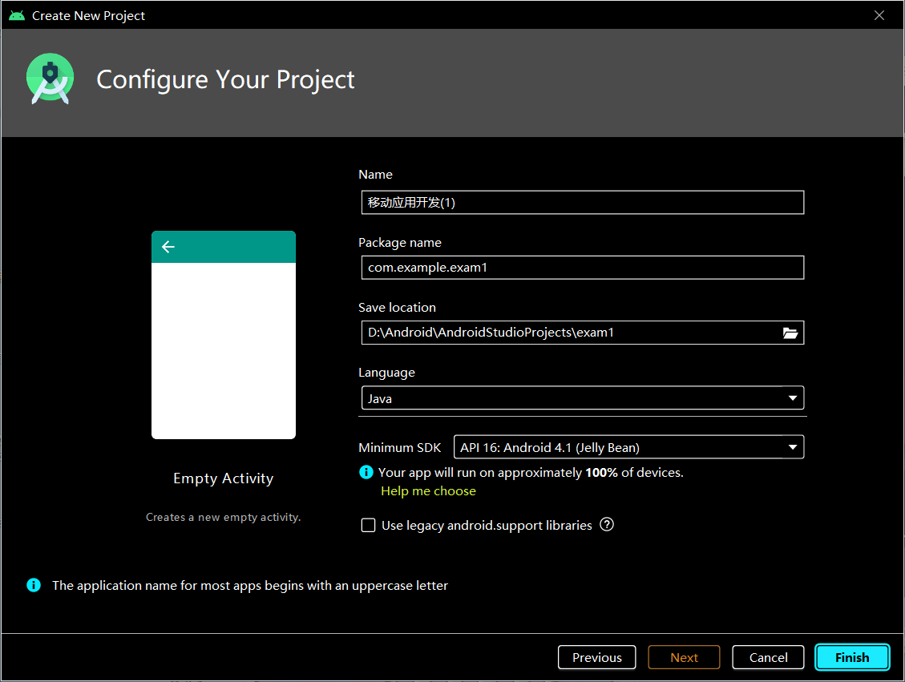
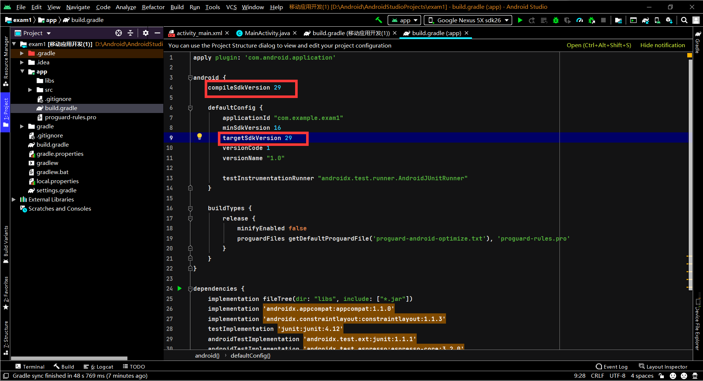
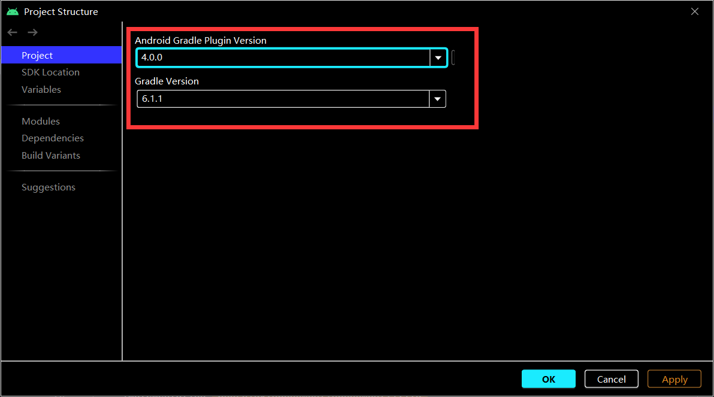
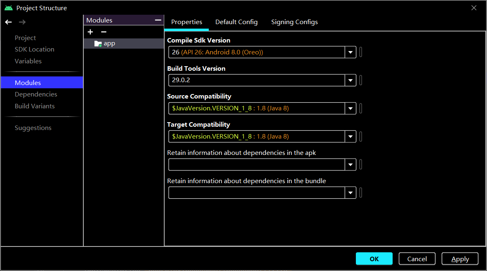
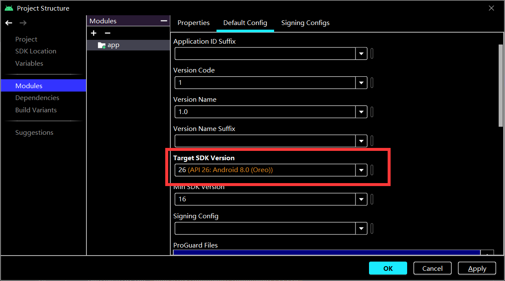
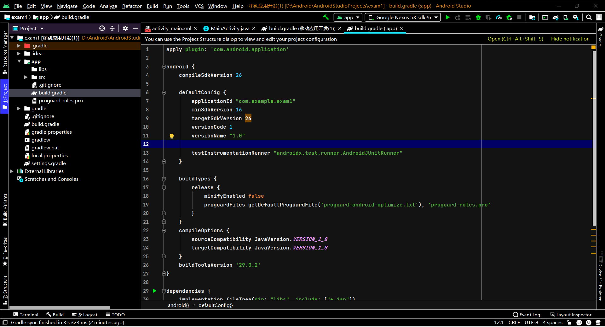
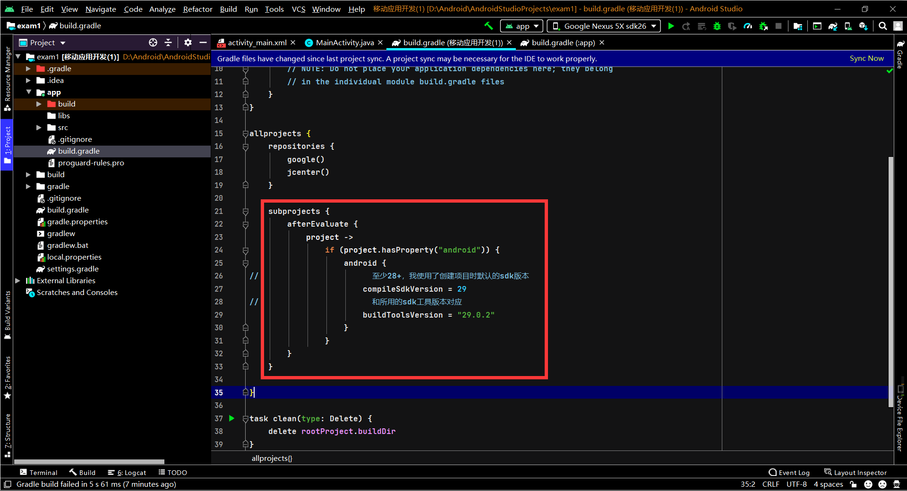
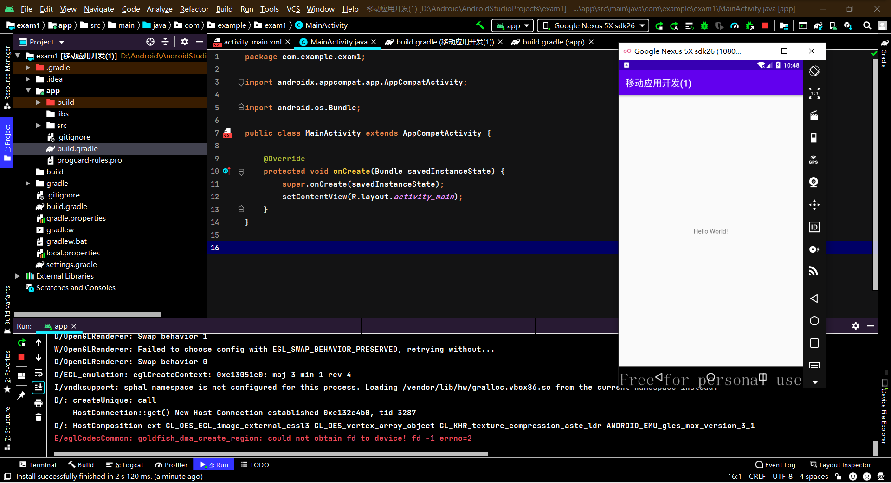

修改Android项目sdk版本


这里我有一个疑惑点，先说一下我知道的：Android Studio创建的新项目会根据当前环境下本地最新的sdk版本创建，因为我现在最新的就是sdk api就是29，所以创建的项目对应sdk api29。
我疑惑的：当我删除掉sdk 29的所有与相关信息的时候，再创建项目，他竟然会自己下载sdk 29的一小部分信息，虽然不是整个sdk，但是足以影响到我创建新项目！！！

1、Android Gradle Plugin Version和Gradle Version

2、这里我把Compile Sdk Version(SDK版本)从29修改到了26，也就是把对应的安卓版本修改到了Android 8，build Tools Version至少要使用29.0.2

3、这边默认配置(default config)中的Target SDK Version也修改成了26

4、然后点OK，回到app的gradle文件中看一下，已经根据刚刚的配置发生改变了

1、说一个什么什么样式找不到，真恶心1
2
3C:\Users\30335\.gradle\caches\transforms-2\files-2.1\c2c5fa787d66aaf40578b3071f4d283f\appcompat-1.1.0\res\values-v28\values-v28.xml:5:5-8:13:
AAPT: error: resource android:attr/dialogCornerRadius not found.
点击蓝色log，跳转过去看一下，代码中有一行注释中提到，sdk api 需要28+，这样错误的原因就很明了了，我们的sdk版本是261
<!-- We can use the platform styles on API 28+ -->
在allprojects中插入，然后sync now一下1
2
3
4
5
6
7
8
9
10
11subprojects {
afterEvaluate {
project ->
if (project.hasProperty("android")) {
android {
compileSdkVersion = 29
buildToolsVersion = "29.0.2"
}
}
}
}

